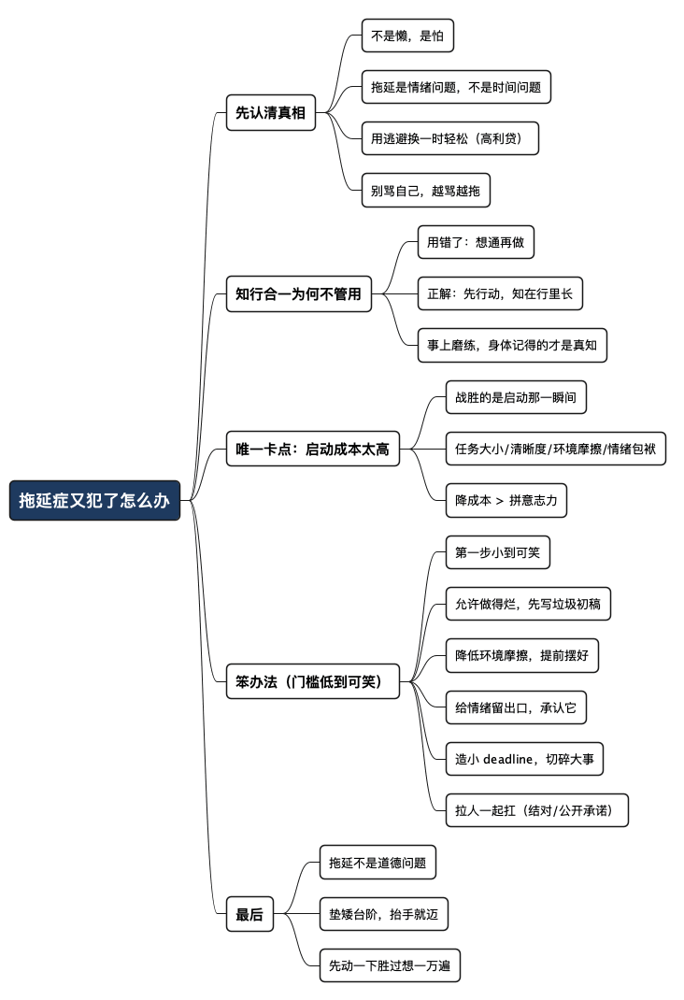

拖延症又犯了，怎么办
Posted on 六 04 7月 2026 in Journal
| Abstract | 拖延症又犯了，怎么办 |
|---|---|
| Authors | Walter Fan |
| Category | Journal |
| Version | v1.0 |
| Updated | 2026-07-04 |
| License | CC-BY-NC-ND 4.0 |
拖延症又犯了，怎么办
一件事，我知道该做，也知道早做早好，可就是不想动。
于是我打开浏览器"查点资料"，顺手刷两条新闻；起身倒杯水，回来又觉得桌子有点乱，先收拾一下；收拾完坐下，忽然想起还有个消息没回……一上午就这么过去了，那件真正该做的事，还躺在原地，一个字没动。
deadline 越近，它就越像悬在我头顶的那柄剑——达摩克利斯之剑，据说古希腊那位大臣坐上国王的宝座才发现，头顶用一根马鬃吊着一把利剑，随时可能掉下来。这个画面精准得可怕：明明知道剑在那儿，你却动不了,越想越怕，越怕越拖。
克服拖延的方法我研究得不少：番茄钟、要事第一、吃掉那只青蛙、两分钟法则……道理我都懂。我也常拿王阳明那句"知行合一"来劝自己——他说"未有知而不行者，知而不行只是未知"，意思是你没去做，是因为你其实没真懂。
道理很硬，可我还是想说一句："臣妾就是做不到"。
这篇不打算再给你灌一套"只要自律就能赢"的鸡汤。我想换个角度：先承认方法大多没用，再看看到底卡在哪，最后给几个我自己真用得动的笨办法。
先接受一个扎心的事实：你不是懒，是怕
我们总把拖延归到"懒""不自律""意志力差"上，然后开始自我攻击。可越骂自己，越不想动——因为一想到那件事，连带的全是"我又搞砸了"的羞耻感，大脑本能地躲开。
我后来慢慢想明白一件事：拖延不是时间管理问题，是情绪管理问题。
你拖着不做的那件事，往往伴着某种不舒服的情绪：
- 怕做不好（写不出那份方案，怕被人看出水平不够）；
- 觉得太难、不知从哪下手（那种"一团乱麻"的无力感）；
- 觉得太枯燥、太无聊（改一堆格式，填一堆表格）；
- 或者干脆是——它太大了，大到我一看就想逃。
拖延，本质上是用"逃避"换一时的轻松。刷手机的那十分钟你是舒服的，代价是那把剑又往下掉了一寸。它是一笔高利贷：眼下借来的每一分钟轻松，deadline 那天都要连本带利还回去。
所以第一步不是"逼自己上"，而是先别骂自己。骂没用，骂只会让那件事更可怕。
为什么"知行合一"对我不管用
不是王阳明说错了，是我用错了。
他讲"知行合一"，还有下半句常被忽略——"事上磨练"。他不是让你在书房里想通了就自动会做，而是让你在具体的事上一点点练。可我们这些"道理巨人、行动矮子"，往往是把"知"停在了脑子里：我知道该早起、该锻炼、该早点动手，这个"知"是抽象的、飘着的。
真正的"知"是身体记得的。就像你知道"骑车要保持平衡"没用，摔几次、蹬起来之后，那个平衡感才长进你身体里。写代码也一样：你"知道"某个坑，和你半夜被这个坑坑过、debug 到两点、第二天一见类似代码就心里一紧——这是两种完全不同的"知"。
所以"知行合一"对付拖延的正确打开方式不是"我要想通再去做"，而是反过来：
先做起来，哪怕只做一点点，让身体先动，"知"会在"行"里慢慢长出来。
你不是想清楚了才行动，而是行动了才想得清楚。
道理讲完了。可"先做起来"这五个字，本身就是最难的那一步。下面才是重点。
卡点其实只有一个：启动成本太高
我把自己拖延的所有场景复盘了一遍，发现痛苦几乎全集中在"从不做到做"的那一下。真正做起来之后，往往没那么难受——甚至还挺爽。
这就是我们和拖延对抗时最容易忽略的地方：你要战胜的不是"整件事"，而是"启动的那一瞬间"。
一件事在你脑子里的"启动成本"，大概由这几样决定：
| 因素 | 启动成本高（想逃） | 启动成本低（抬手就干） |
|---|---|---|
| 任务大小 | "写完整个项目文档" | "写文档的第一句话" |
| 清晰程度 | "优化一下系统" | "把这个函数改成返回列表" |
| 环境摩擦 | 要开五个软件、找半天文件 | 文件已打开，光标已就位 |
| 情绪包袱 | "又要面对我不擅长的东西" | "就当练手，写砸了删掉就行" |
你会发现，拖延最狠的那些事，几乎每一栏都踩满了：又大、又模糊、又要一堆前置准备、还带着"我肯定搞不好"的心理阴影。四个高成本叠一块儿，不逃才怪。
所以对付拖延的核心，不是"提高意志力"（意志力这东西不可靠，累了、饿了、心情差了就没了），而是把启动成本降到低于你的抵抗力。低到什么程度？低到你觉得"这也太简单了吧，那随手做一下"。
几个我自己真用得动的笨办法
不追求完美方法论，只挑那些门槛低到你会嫌它简单的。太"高级"的方法，本身就有启动成本。
-
把第一步小到"可笑" 不要写"完成报告"，写"打开文档，写一个烂标题"。不要说"去健身房",说"把跑鞋穿上"。目标小到你都不好意思拒绝——而人一旦动起来，惯性会接管一切。这就是"两分钟法则"：如果一件事两分钟内能开个头，那就现在开。
-
允许自己做得烂 拖延的人往往是隐藏的完美主义者：怕做不好，索性不做。我给自己的许可是——先写一版垃圾出来。初稿的唯一任务是"存在"，不是"优秀"。有了烂初稿，改起来毫无压力；对着空白页，才是最恐怖的。
-
降低环境摩擦 前一天晚上，把明早要动的那个文件打开、光标放好、参考资料摊在桌面上。第二天坐下，不用做任何"准备工作"就能直接开干。别小看这一下：很多拖延，就死在"我得先准备一下"这句话里。
-
给情绪留个出口，别硬扛 实在动不了的时候，我会先花两分钟写一句大实话："我现在不想做这个，因为我怕写不好 / 觉得太烦。"承认它，情绪反而松了一半。然后再回到第 1 条：那就先做那个"可笑的第一步"。
-
用 deadline，但别只有 deadline deadline 确实有用，但只靠它，你会一直被那把剑追着跑，代价是长期的焦虑。更好的做法是给自己造几个"小 deadline"——把大事切成三五块，每块配一个自己说了算的时间点。剑变小了，也就没那么吓人了。
-
把事拉到别人面前，别一个人扛 前面五条都是"对自己动手"，可有些事，一个人是真扛不动。我自己就栽过一次：当年受机械工业出版社编辑之邀写一本技术书，起初兴冲冲写了不少，后来编辑提了一堆要求，偏偏那段时间工作又忙，中间还生了一场病，于是一拖再拖，眼看就要黄了。后来是一位朋友加进来，和我一起写、互相督促，才终于——不那么准时地——把稿子交了出去。 这件事让我明白：外部督促不是"作弊"，而是把私下里可以随便糊弄的事，变成了有人看着、不好意思糊弄的事。 你可以找人结对（一起写、一起练），可以公开承诺（把 deadline 告诉领导或朋友），也可以定期汇报进度。一个人时你只欠自己，欠着欠着就赖账了；有人在旁边，那点"不想被人看轻"的心气，反而能替你撑过最难启动的那几下。
一句话：
不要跟"整件大事"较劲，只跟"启动的那一下"较劲。
你不需要有毅力，你只需要把门槛降到你抬抬手就能迈过去——实在迈不过，就拉个人陪你一起迈。
最后一句
拖延不是道德问题，别再用"我怎么这么没用"来惩罚自己了——那只会让那把剑更沉。
它更像一个信号：这件事的启动成本，超过了你此刻的心理承受力。那就别急着上强度，先把台阶垫矮一点，矮到你随手就能踏上去。
我也还在拖，也还在犯。但我不再指望某天突然"变自律"了。我只指望下一次剑又晃起来的时候，我能对自己说一句："别想那么多，就先写那个烂标题吧。"——然后，把手放上键盘。
先动一下，胜过想一万遍。
全文思维导图
@startmindmap
<style>
mindmapDiagram {
node {
BackgroundColor #F8F9FA
RoundCorner 10
Padding 10
FontSize 13
}
:depth(0) {
BackgroundColor #1E3A5F
FontColor white
FontSize 18
FontStyle bold
}
:depth(1) {
FontSize 15
FontStyle bold
}
:depth(2) {
FontSize 13
}
}
</style>
* 拖延症又犯了怎么办
** 先认清真相
*** 不是懒，是怕
*** 拖延是情绪问题，不是时间问题
*** 用逃避换一时轻松（高利贷）
*** 别骂自己，越骂越拖
** 知行合一为何不管用
*** 用错了：想通再做
*** 正解：先行动，知在行里长
*** 事上磨练，身体记得的才是真知
** 唯一卡点：启动成本太高
*** 战胜的是启动那一瞬间
*** 任务大小/清晰度/环境摩擦/情绪包袱
*** 降成本 > 拼意志力
** 笨办法（门槛低到可笑）
*** 第一步小到可笑
*** 允许做得烂，先写垃圾初稿
*** 降低环境摩擦，提前摆好
*** 给情绪留出口，承认它
*** 造小 deadline，切碎大事
*** 拉人一起扛（结对/公开承诺）
** 最后
*** 拖延不是道德问题
*** 垫矮台阶，抬手就迈
*** 先动一下胜过想一万遍
@endmindmap

本作品采用知识共享署名-非商业性使用-禁止演绎 4.0 国际许可协议进行许可。 欢迎在我的个人网站 https://www.fanyamin.com 访问原文并评论。